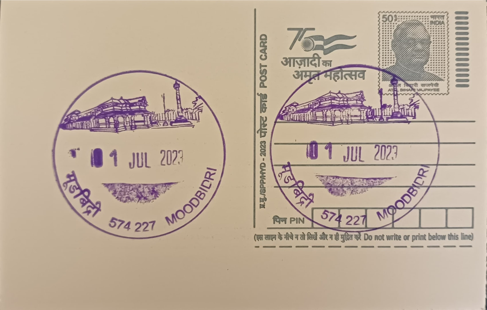

Saavira Kambada Basadi
ಸಾವಿರ ಕಂಬದ ಬಸದಿ


The name Saavira Kambada Basadi translates directly from Kannada as the 'Thousand Pillar Temple,' a popular designation that has largely eclipsed its formal consecrated title, Tribhuvana Tilaka Chudamani Basadi. The temple is dedicated to Chandranatha (also rendered Chandraprabha), the eighth Tirthankara in the Jain tradition, whose eight-foot image, said to be cast from five metals (panchadhatu), occupies the garbhagriha. Its colloquial name reflects the sheer density of carved granite columns filling the pillared hall, a feature so distinctive that it became the site's common identity long before most visitors knew its original dedicatory name, a pattern common to many Vijayanagara-period basadis where popular epithets tied to physical grandeur superseded formal sanskritic titles.
As the grandest of the eighteen basadis clustered in Moodabidri, the temple anchors the town's reputation as 'Jaina Kashi,' a coastal Karnataka counterpart to Varanasi in terms of Jain religious density and scholarly activity. It stands as a premier example of Vijayanagara-era Jain temple building in Tulunadu, reflecting a period when Jain chieftains and merchant patrons, operating under or alongside the Vijayanagara empire, sponsored substantial basadi construction along the Karnataka coast. The temple remains under the religious administration of the Moodabidri Jain Matha (the Swasti Shri Charukirti Bhattarakar Mठha), which has historically overseen both the temple's rituals and the broader Jain institutional presence in the town, giving the site standing as both an active place of worship and a monument of recognized architectural importance.
Construction is traditionally dated to 1430 CE under the patronage of Devaraya Wodeyar, a local Jain chieftain of the Chowta ruling family, with building work reported to have extended across roughly three decades before the complex reached its present form through successive stages of expansion. The structure rises in three storeys, the ground level built in stone and the upper two levels constructed in wood with sloped, tiered roofs typical of coastal Karnataka temple carpentry, giving the building a pagoda-like silhouette distinct from inland Vijayanagara stone gopurams. The pillared hall itself contains seven mantapas and close to a thousand granite columns, each carved with a different combination of figures, floral motifs, or geometric banding, making the claim that no two pillars are alike a genuine structural curiosity rather than a loose figure of speech.
The temple's most recognizable exterior feature is its manastambha, a freestanding monolithic column rising roughly fifty feet in front of the main hall, traditionally cast or cut in a single piece and bearing images of the tirthankara on its faces, a form found before most basadis in the region but executed here at unusually commanding scale. Beyond the manastambha, the complex preserves inscriptional and sculptural records documenting donations and expansions by successive patrons, offering historians a layered view of how the site grew from its fifteenth-century core into a larger temple precinct over subsequent generations of Jain patronage in Moodabidri.
The site continues to function as an active basadi under the Moodabidri Jain Matha, which conducts regular worship and festival observances there alongside its role in maintaining the temple's fabric, while its carved pillars and wooden upper storeys have drawn periodic conservation attention given the vulnerability of timber construction in the region's humid coastal climate. Scholarly interest in the temple's history and craftsmanship has also produced dedicated workshops and documentation efforts examining its architecture, placing it alongside Moodabidri's Jain manuscript repositories as one of the town's principal draws for researchers as well as pilgrims. Visitors arriving via Moodbidri's post office today find the basadi still functioning much as it has for centuries, a working temple rather than a purely archaeological site.
| Date of Introduction | November 18, 2016 |
|---|---|
| Address | Sub Postmaster, |
| Moodbidri SO, | |
| Dakshina Kannada (dt.), Karnataka - 574227. |